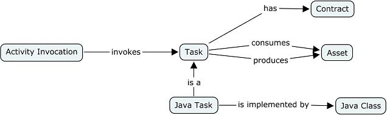

Java Task |
A task is the basic activity for producing assets.
A Java task is the basic technique to produce assets in Java. Example 1: patterns are processed by a Java task. Example 2: a text transformation factory component delegates in final its transformation to a text-to-text transformation Java task. The interest is to use any kind of tools with simple to sophisticated Java implementations.
A java task is an activity called by an activity invocation. The task is associated to a Java class that implements the task.

Figure 1. Java Task Structure